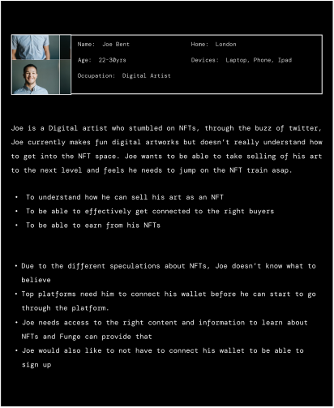
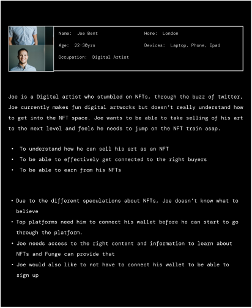
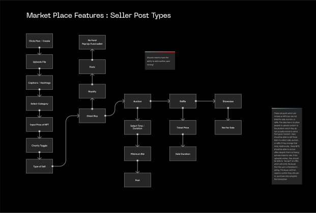
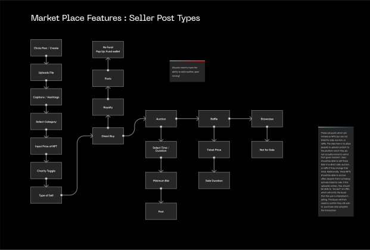

Funge Web App - A Social NFT Trading Platform
Overview
Funge Platform represents a sophisticated and dynamic social NFT marketplace that offers users a seamless and comprehensive ecosystem for the acquisition, sale, and creation of NFTs. Notably, it leverages the robust capabilities of the Polygon blockchain to provide an optimized experience, characterized by exceptionally low transaction fees.
This platform serves as a nexus for individuals passionate about non-fungible tokens, fostering a thriving community of collectors, creators, and enthusiasts. Funge Platform's integration with the Polygon blockchain ensures that users can transact with minimal overhead costs, making it an attractive choice for those seeking cost-effective NFT interactions within the blockchain space
.svg)
What was the Problem?
The first version of the Funge platform was launched on Android at the MVP stage as a mere NFT market place for buying and selling of NFTs. However there was need to further expand on the scope of the solution based on increased user needs which were gathered from research and user feedbacks. Other than having just a market place, the client wanted to create a more engaging experience between buyers and sellers on the platform while keeping the UX simple enough for any level of user.
Solution
The focus of expanding the project scope was;
- To design an NFT platform with a social media approach where users can buy, sell and create NFTs
- To create a Wallet system where users can buy and pay for their assets via credit cards, debit cards and Polygon.
- A learning and rewards system for beginners.
- An Auction feature where users can create an auction for any scarce digital content.
My Role
In this project, I was responsible for conducting user research, analysing research data, translating insights to design solutions, managing stakeholders, information architecture, facilitating ideation workshops and visual design. Shout out to Samuel(Product Designer) who was awesome on the design roadmap, coordinating and designing parts of product experience.
My Approach
Primary Research
Firstly, I reviewed the following resources;
- The existing MVP mobile application
- The feedbacks from community users of the application
- The community discussion channel on Discord
- The Product Roadmap
Analysing the Existing Funge MVP
Analysing the Existing Funge MVP I got access to the beta version of the MVP on android to understand how the application functioned end to end. Through interacting with the app, I was able to map the end to end flow of the MVP.

Key Findings
- I conducted a preliminary assessment of the existing user interface within the application, focusing on a comprehensive review of various visual elements. This evaluation encompassed an examination of aspects such as color schemes, design systems, alignment, hierarchy, typography, and page readability, among others.
- I conducted a comprehensive evaluation of the application's functionality, systematically testing various features by attempting to execute a range of tasks. This examination allowed me to discern areas of effectiveness, identify areas requiring enhancement, and pinpoint aspects that exhibited complete non-functionality.
- One of my primary focal points was the assessment of accessibility, with a particular emphasis on ensuring compliance with global accessibility standards for the Funge app. Given that I was also tasked with a comprehensive visual overhaul, I meticulously documented any instances where the application fell short of these accessibility guidelines.
- As I navigated through the app's user experience, I dedicated myself to mapping out the pre-existing user flows. Concurrently, I took particular care to delineate elements of the application that appeared to introduce complexity into the user experience.
Analysing the Existing Funge MVP
Analysing the Existing Funge MVP There was a need to understand the existing users and what their experiences were with the previous MVP version of the Funge Application and I did this by leveraging the feedback channel in the Funge community discord Channel. Below are some of the extracts from there;
Gaining User insights
To gain deeper insights into user preferences and ascertain their genuine needs, I initiated a concise survey among our community members. I devoted a significant amount of time and attention to carefully formulating the survey questions to ensure they accurately captured the specific information I sought
Key Findings
The survey recorded Over 110 respondents. Below are the insights I gathered.
Survey Summary
- Users at the beginner level complained of a complex experience while using other competitor platforms
- 87.7% of users complained about spending on high gas fees when purchasing NFTs.
- 62.1% of users wanted a marketplace that Supports several blockchains
- Users also complained about the search feature being really bad, and it was really hard to find NFT collections unless you have a direct link to it.
- About 56.8% Users found the current platform to have low readability.
There were other findings such as being able to receive latest news, P2P trading, community forum (more like bitcointalk experience), Rarity tools, etc.
User Personas
I created three different user personas to represent three set of users which were;
- Newbies in the Web 3 space
- Creators,
- Buyers and Sellers of NFTs
.svg) 

Competitive Analysis
Through the survey, I successfully identified several competitors in the Funge NFT Marketplace space. Subsequently, I conducted a succinct yet comprehensive competitive analysis, focusing on discerning their strengths and pinpointing opportunities for capitalizing on their weaknesses. Among the noteworthy competitors that I examined included
- Openseas
- Looksrare
- Rarible
Key Insights from the Primary Research
Having direct insights from Funge community members played a pivotal role in shaping the bedrock of our primary research efforts. Guided by the principles of User-Centered Design, we delved deep into uncovering user pain points. Through our primary research, we gained valuable insights into the early users' experiences with the MVP and gained a sense of their initial expectations. The primary research facilitated a crucial alignment between the business objectives and user needs. This alignment proved instrumental in our endeavor to prioritize feature development, a critical task given our time constraints.
Information Architecture
Having carefully collected essential insights through multiple rounds of idea exchange, moodboarding, and sketching, we proceeded to construct the user flows for the various use cases and features. To ensure clarity and ease of comprehension, I divided these user flows into manageable sections, avoiding unnecessary complexity. While I cannot present the entirety of the flow diagrams here, I have included select components below for reference
.svg)
.svg)
 

Reusable Component Library
To commence this phase of the design, my initial step involved accessing and conducting a thorough audit of the existing brand kits. This in-depth examination of the pre-existing kits, undertaken with a focus on scalability, enabled me to enact a comprehensive restructuring of the component library . My primary goal was to reinstate a high level of design consistency by crafting reusable brand components and assets, encompassing elements like typography, color palettes, icons, and grid systems, among others
.svg)
HIFI Designs
I collaborated with the Samuel to pull the designs off on figma with series of Iterations. We got all the team members to collaborate and make necessary contributions while the designs were going on. This was one way to get everyone to pull in the same direction.
.svg)
Final Words
Working on this project further emphasized the importance of employing a data driven approach to design problems. Initially, design decisions were influenced by stakeholders biases and there was a huge gap between the delivered product and user needs as noticed from the research. I balanced this out by introducing a data driven approach. Unfortunately, I didn’t see the implementation of this project due to budget constraints from the client. I would have loved to conduct series of user testing with the community members of all levels.